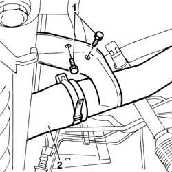

1036L32 FRONT OIL SEAL INTAKE CAMSHAFT IN CYLINDER HEAD EXTENSION REPLACE WITH TIMING BELT REMOVED
- Path
- Procedures > 10 ENGINE UNIT > 1036 TIMING SYSTEM > 1036L CAMSHAFT (2) IN TOP HEAD (1) > 1036L32 FRONT OIL SEAL INTAKE CAMSHAFT IN CYLINDER HEAD EXTENSION REPLACE WITH TIMING BELT REMOVED
- Kind
- repair procedure (removal / refitting; the operation number is the code)
- Applies to
- engines: 2.3 JTD 16V; all production periods
- Interactive page
- https://sloeber94.github.io/elrnDB-fDct/en/#/244000730
Applies to: engines: 2.3 JTD 16V; all production periods
 Removing
Removing
 Refitting
Refitting- Remove the oil seal from its seat on the intake manifold shaft.
Applies to: engines: 2.3 JTD 16V; all production periods
Refitting
Removing1. Use the tool to fit a new oil seal to the intake side camshaft. Tighten the tool screw to bring the oil seal into contact with the seat in the head extension.
 | Description | Code | Function |
|---|---|---|---|
1 | Fitting tool | 1.870.854.000 | Introduction of new oil seal |
